X1512–X1600¶
Orthojoins, Moses Circle Centers & Star-Named Centers
X1512–X1600 (Orthojoins, Moses Circle Centers & Star-Named Centers) — 16 representative centers (from 89 in collection) constructed on acute reference triangle \((a, b, c) = (5, 6, 7)\) with unit baseline AB = \(1\).¶
Group Preamble — Orthojoins: X1512-X1568
The orthojoin of a point X =\(x : y : z\) other than X6 is defined in the Glossary algebraically in terms of variables a,b,c. When these are sidelengths of a triangle, orthojoin(X) is the orthopole of the trilinear polar of the isogonal conjugate of X. (Added to ETC 6/18/03.) Let
Then orthojoin(X) =\(f(a,b,c) : f(b,c,a) : f(c,a,b)\). Below, orthojoin(X) is written as H(X).
In other words, if X lies on a line PG through the centroid G, then \(H(X ^{-1})\) lies on the line HQ, where H denotes the orthocenter and Q is a point that can be determined from the above formula. Examples:
Suppose P is not X6, and let
S = crossdifference(P, X6) (S lies on the line at infinity) S' = orthopoint <orthopoint>`(S) (:g:`S' lies on the line at infinity) S″ = complementary conjugate of S' (S″ lies on the nine-point circle)
Let X be a point on line PX6 and not on a sideline of ABC. Then \(H(X ^{-1})\) is on line S″S'. Examples:
Further,
H(X11) = L(117,515)∩L(118,516) H(X37) = L(117,515)∩L(119,517) H(X244) = L(118,516)∩L(119,517)
If X lies on the line L(230,231), then H(X) lies on the nine-point circle. Examples:
H(X230) = X114 H(X231) = X128 H(X232) = X132 H(X468) = X1560 H(X523) = X115 H(X647) = X125 H(X650) = X11
X1512ORTHOJOIN OF X1

X1513ORTHOJOIN OF X2
X1514ORTHOJOIN OF X3
X1515ORTHOJOIN OF X4
X1519ORTHOJOIN OF X9
X1529ORTHOJOIN OF X25
As a point on the Euler line, X1529 has Shinagawa coefficients \((FS^{2}, -(E + F)[4(E + F)F - S^{2}])\).
X1531ORTHOJOIN OF X32
X1532ORTHOJOIN OF X37
As a point on the Euler line, X1532 has Shinagawa coefficients \((\$a\$S^{2}, \$a\$S^{2} + 2abc(E + F) + 2\$a(S_{A})^{2}\$)\).

X1533ORTHOJOIN OF X39

X1536ORTHOJOIN OF X42
X1537ORTHOJOIN OF X44
X1539ORTHOJOIN OF X50
X1541ORTHOJOIN OF X55
X1549ORTHOJOIN OF X73
X1550ORTHOJOIN OF X110
X1551ORTHOJOIN OF X111
As a point on the Euler line, X1551 has Shinagawa coefficients \((2(E + F)^{3} - 9(E - 2F)S^{2}, -3(E + F)[(E +10F)(E + F) - 6S^{2}])\).
X1555ORTHOJOIN OF X182
X1556ORTHOJOIN OF X251
As a point on the Euler line, X1556 has Shinagawa coefficients \((2(E + F)^{3} + (E + 2F)S^{2}, -(E + F)[5(E + 6F)(E + F) - 2S^{2}])\).
X1557ORTHOJOIN OF X263
As a point on the Euler line, X1557 has Shinagawa coefficients \(([(E + F)^{3}F + 2(E + F)^{2}S^{2} + S^{4}] S^{2}, -4(E + F)^{3}F + (E - 11F)(E + F)^{3}S^{2} - (E + 10F)(E + F)S^{4} - 3S^{6})\).
X1559ORTHOJOIN OF X393
X1560ORTHOJOIN OF X468
X1561ORTHOJOIN OF X511
X1562ORTHOJOIN OF X520

X1563ORTHOJOIN OF X588
As a point on the Euler line, X1563 has Shinagawa coefficients \(([2(E + F)^{2} + (9E + 8F)S+10S^{2}]S, -(E + F)^{2}E - 2(5E - F)(E + F)S - 4(7E - 2F)S^{2} - 22S^{3})\).
X1564ORTHOJOIN OF X589
As a point on the Euler line, X1564 has Shinagawa coefficients \(([2(E + F)^{2} - (9E + 8F)S+10S^{2}]S, (E + F)^{2}E - 2(5E - F)(E + F)S + 4(7E - 2F)S^{2} - 22S^{3})\).
X1565ORTHOJOIN OF X657
X1566ORTHOJOIN OF X676
X1567ORTHOJOIN OF X694
X1568ORTHOJOIN OF X800
X1569MOSES-CIRCLE ANTIPODE OF X115
X1570MOSES-CIRCLE INVERSE OF X3
X1571INSIMILICENTER OF EXCENTRAL AND MOSES CIRCLES
X1572EXSIMILICENTER OF EXCENTRAL AND MOSES CIRCLES
X1573INSIMILICENTER OF SPIEKER AND MOSES CIRCLES
X1574EXSIMILICENTER OF SPIEKER AND MOSES CIRCLES

X1575EXSIMILICENTER OF SPIEKER AND (1/2)-MOSES CIRCLES
X1576ISOGONAL CONJUGATE OF X850
X1577ISOGONAL CONJUGATE OF X163
X1578POINT ALTERF I
X1579POINT ALTERF II
X1580POINT ALUDRA
X1581ISOGONAL CONJUGATE OF X1580
X1582POINT CANOPUS
X1583POINT CAPELLA I
X1584POINT CAPELLA II
X1585POINT CAPH I
X1586POINT CAPH II
X1589POINT CHARA I
As a point on the Euler line, X1589 has Shinagawa coefficients \((F + S, -S)\).
X1590POINT CHARA II
As a point on the Euler line, X1590 has Shinagawa coefficients \((F - S, S)\).